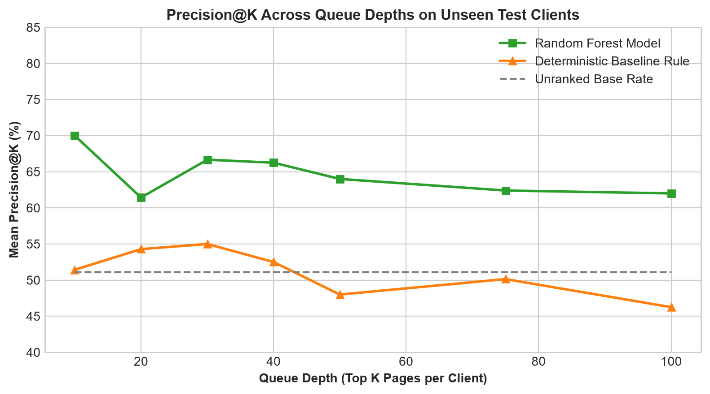
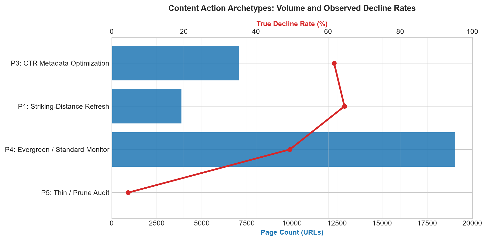

GroupShuffleSplit). On unseen client domains, a regularized Random Forest model achieves 64.0% Mean Precision@50—providing a +14.0 percentage point lift over the 50.0% unranked base rate and a +10.4 percentage point lift over baseline rule heuristics. We operationalize these predictions into an automated action playbook featuring 5 content archetypes, reason codes, and human-in-the-loop verification protocols to support high-ROI editorial resource allocation.
Digital publishers and corporate marketing organizations manage catalogs containing thousands of content URLs. Over time, search engine ranking shifts, competitor publications, and evolving search intent erode organic visibility. Because editorial capacity is inherently finite—costing 2 to 4 editorial hours ($150–$300) per comprehensive article refresh—content teams cannot rewrite every aging page.
In practice, teams rely on arbitrary timestamp heuristics (refreshing content strictly based on calendar age) or reactive crisis management (refreshing only after catastrophic traffic losses). This results in wasted budget on zero-traffic pages and neglected opportunities in high-leverage positions.
This research introduces a disciplined machine learning decision-support framework that predicts search traffic decay risk and generates an actionable, ranked prioritization queue with explicit human-readable reason codes.
The study utilizes the FlyRank Anonymized Search Intelligence Dataset, encompassing 30,000 content items across 32 distinct client domains over a 90-day retrospective observation window.
To ensure complete public safety and client confidentiality, all entity identifiers (client_id, content_id) are cryptographic pseudonyms. Raw search query strings, domain names, credentials, and proprietary text exports were removed prior to analysis. Identifiers are utilized strictly for group splitting and joins, never passed as model features.
We construct a 17-dimensional historical feature vector capturing three primary signal axes:
log_impressions_90d, log_clicks_90d, ctr, and historical ranking percentile.avg_position (with has_position indicator handling position zero), position opportunity score.days_since_last_update, content_age_days, engagement_rate, scroll_rate, and word_count with missingness flags.A central failure mode in applied search intelligence ML is evaluating models on naive random train/test splits. Because pages from the same client domain share brand authority, technical infrastructure, and publishing cadences, random splits permit models to memorize client identities rather than learning generalizable signals.
We employ a strict Client-Grouped Split (GroupShuffleSplit) with 80% of client domains assigned to training (25 clients, 23,837 pages) and 20% held out for testing (7 clients, 6,163 pages). There is exactly zero client overlap between training and evaluation folds.
The ground-truth binary label is_declining_label is defined as (trend_direction == 'down') over the retrospective period. We evaluate all models against a transparent deterministic scoring baseline:
Baseline Score = 0.45 × Visibility_Rank + 0.35 × Freshness_Risk_Rank + 0.20 × Position_Opportunity
All target-derived fields (trend_direction, trend_pct) and future outcome-window activity are excluded from inputs. A controlled leakage test verified that deliberately injecting trend_pct inflated performance to 98.0% Precision@50 (1.000 ROC-AUC), confirming our evaluation harness detects leakage.
Models are evaluated on held-out test clients using Mean Precision@50 across per-client queues (the fraction of the top-50 prioritized URLs per client that are truly declining in search performance).
| Model Configuration | Split Regime | Mean Precision@50 | ROC-AUC | Lift vs. Base Rate |
|---|---|---|---|---|
| Unranked Base Rate Floor | Grouped (Test) | 50.00% | — | 0.00 pp |
| Deterministic Baseline Rule (W04) | Grouped (Test) | 53.60% | 0.561 | +3.60 pp |
| Random Forest Classifier | Grouped (Honest) | 64.00% | 0.607 | +14.00 pp |
| Logistic Regression Benchmark | Grouped (Honest) | 72.00% | 0.633 | +22.00 pp |

Permutation importance on held-out clients demonstrates that historical impression volume (log_impressions_90d), content age (content_age_days), and visibility score provide the highest predictive signal. High-impression assets in positions 4–20 exhibit the highest ranking volatility.
In accordance with the Claim Ladder methodology, we explicitly document the operational boundaries of this analysis:
To translate model risk probabilities into editorial workflows, we segment all URLs into five operational archetypes with standardized reason codes:
striking_distance_decay_risk
Criteria: Positions 4–20, impressions ≥ 300, un-updated >90 days, high decay risk.
Action: Comprehensive factual refresh, content expansion, date update, and internal link optimization.
page_one_prominence_defense
Criteria: Positions 1–3, top visibility, un-updated >120 days, moderate decay risk.
Action: Audit against emerging SERP features (AI Overviews, snippets), validate schema markup, refresh outdated citations.
low_ctr_high_visibility
Criteria: Impressions ≥ 400, CTR < 0.5%, positions 1–20.
Action: Title tag and meta description rewrite to realign with evolving user search intent without extensive body rewriting.
evergreen_stable_monitor
Criteria: Stable/growing traffic, high engagement, regardless of age.
Action: Passive monitoring. Do not alter content or fake update timestamps.
low_volume_consolidation
Criteria: Impressions < 50, position > 30, un-updated >180 days.
Action: Evaluate for 301 redirection to primary topic hub, canonical consolidation, or content retirement.

All experiments, feature engineering transformations, and validation splits are fully reproducible from the repository source code using fixed random seeds (RANDOM_SEED = 42).
• Capstone Notebook: work/notebooks/capstone.ipynb
• Validation Audit: work/notebooks/w06_validation_audit.ipynb
• Action Playbook: work/notebooks/w07_action_playbook.ipynb
• Metrics Receipts JSON: work/outputs/action_playbook_metrics.json